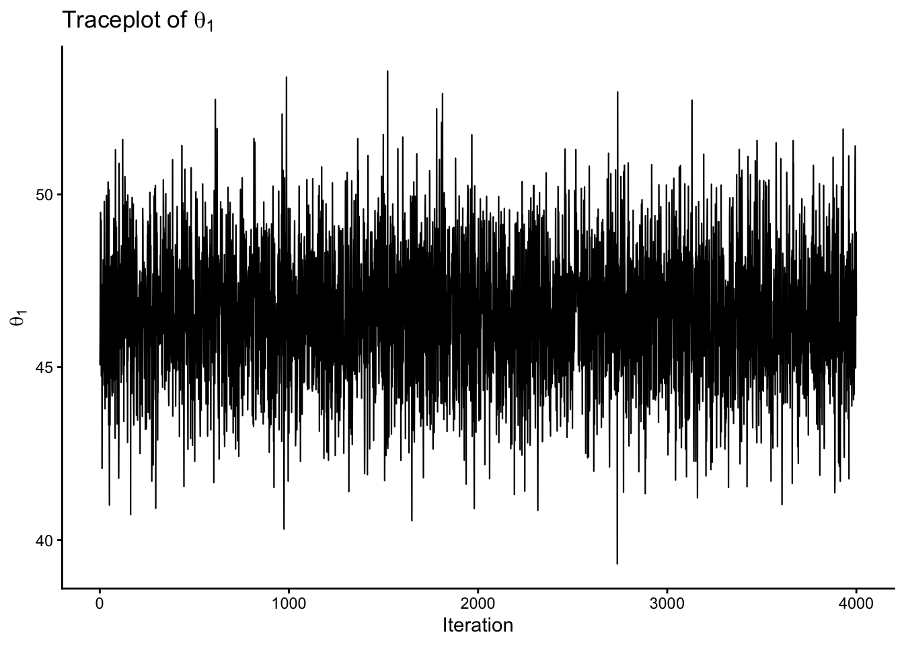
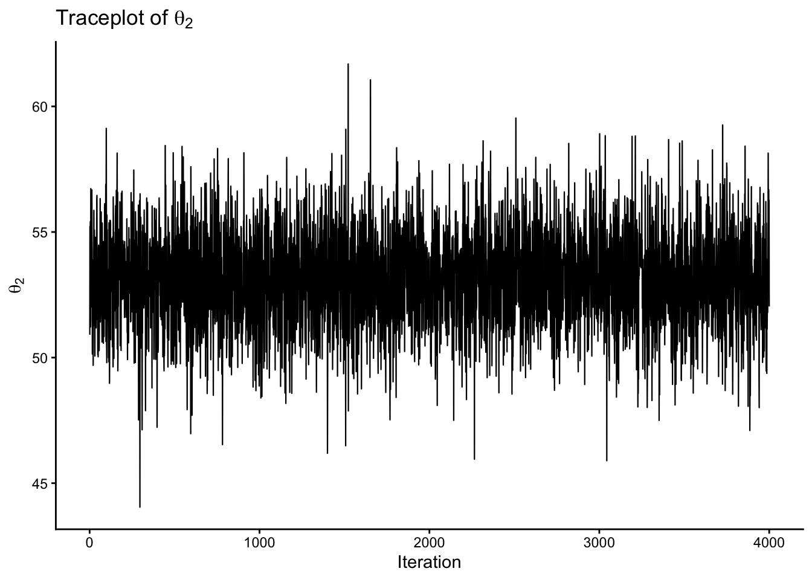

Up to this point, most of our models have been univariate: each observational unit contributed a single measurement. In many applications, however, each unit contributes multiple related measurements. Examples include:
repeated measurements on the same person,
several biomarkers measured on the same patient,
multiple exam scores for the same student,
several financial returns observed on the same day.
In such settings, the variables are usually not independent. We therefore need a model that can describe not only the behaviour of each variable separately, but also the dependence structure among variables.
The multivariate Gaussian model is one of the most important models in Bayesian statistics because it
jointly models means, variances, and covariances,
leads to tractable posterior distributions under convenient priors,
provides a foundation for Gibbs sampling in higher dimensions,
supports missing-data imputation,
underlies many later models, including hierarchical normal models, latent Gaussian models, and Gaussian process models.
Note
The multivariate Gaussian model is to multivariate data what the ordinary Gaussian model is to univariate data.
7.1 Why a multivariate model?
So far, we have mostly considered scalar parameters such as
is called the Mahalanobis distance. It is the multivariate analogue of
\[
\frac{(y-\mu)^2}{\sigma^2}
\]
from the univariate Gaussian model.
7.3 Matrix quantities you need to know
To work with the multivariate Gaussian density, it is helpful to remember three matrix ideas.
For a square matrix \(\mathbf{A}\), the quantity \(|\mathbf{A}|\) is its determinant. Roughly speaking, the determinant measures the size or volume associated with the matrix transformation.
For an invertible square matrix \(\mathbf{A}\), the inverse \(\mathbf{A}^{-1}\) satisfies
and we place a multivariate Gaussian prior on \(\boldsymbol{\theta}\), then the conditional posterior of \(\boldsymbol{\theta}\) given \(\boldsymbol{\Sigma}\) remains multivariate Gaussian. This is the multivariate analogue of the normal-normal update from the univariate case.
3. Gibbs sampling
If we combine a Gaussian prior for the mean vector with an inverse-Wishart prior for the covariance matrix, then the full conditional distributions take convenient forms. This makes Gibbs sampling possible.
4. Missing-data imputation
Because conditional Gaussian distributions are again Gaussian, missing entries in a multivariate observation can be imputed from their conditional distribution given the observed entries. This is a major application in Section 7.5 in Hoff (2009).
One can show that the conditional posterior distribution of \(\boldsymbol{\theta}\) given the data and \(\boldsymbol{\Sigma}\) is again multivariate Gaussian:
This formula is the direct multivariate analogue of the univariate Gaussian update.
posterior precision = prior precision + data precision,
posterior mean = weighted average of prior mean and sample mean.
So the same logic we learned in the univariate model continues to hold, but now in matrix form.
Note
The multivariate Gaussian prior is convenient because it matches the likelihood structure of the Gaussian sampling model.
7.9 The inverse-Wishart distribution
In the univariate Gaussian model, a convenient prior for the variance parameter is the inverse-gamma distribution. In the multivariate case, the analogous prior for the covariance matrix is the inverse-Wishart distribution.
In Hoff (2009), it explains the motivation of the Wishart distribution by thinking about empirical covariance matrices. If \(\mathbf{z}_1,\dots,\mathbf{z}_n\) are mean-zero multivariate vectors, then
\(\nu_0\) acts like a prior sample size or degrees-of-freedom parameter,
\(\mathbf{S}_0\) controls the prior scale.
A larger \(\nu_0\) corresponds to stronger prior information about the covariance structure.
NoteIntuition
The inverse-Wishart prior plays the same role for covariance matrices that the inverse-gamma prior plays for variances in the univariate Gaussian model.
7.10 Conditional posterior of the covariance matrix
Conditional on \(\boldsymbol{\theta}\), one can show that the covariance matrix has the full conditional distribution
This gives a Markov chain whose stationary distribution is the joint posterior.
Note
This is one of the most important examples of Gibbs sampling in Bayesian statistics, because it shows how matrix-valued parameters can still be handled tractably.
7.12 A simulated Gibbs-sampling example
The next chunk uses simulated bivariate Gaussian data to illustrate the structure of a Gibbs sampler for \((\boldsymbol{\theta},\boldsymbol{\Sigma})\).
trace_df <-data.frame(iter =1:S,theta1 = THETA[, 1],theta2 = THETA[, 2])p1 <-ggplot(trace_df, aes(x = iter, y = theta1)) +geom_line(linewidth =0.4) +labs(x ="Iteration", y =expression(theta[1]), title =expression("Traceplot of "* theta[1])) +theme_classic()p2 <-ggplot(trace_df, aes(x = iter, y = theta2)) +geom_line(linewidth =0.4) +labs(x ="Iteration", y =expression(theta[2]), title =expression("Traceplot of "* theta[2])) +theme_classic()p1p2

Figure 7.4: Traceplots of the two components of the posterior mean vector from a Gibbs sampler.

Figure 7.5: Traceplots of the two components of the posterior mean vector from a Gibbs sampler.
You can also look at the traceplots for the covariance matrix entries, but we will not show them here. Also, the acf plot for the mean vector components shows some autocorrelation, which is expected in a Gibbs sampler, as well as the effective sample size.
7.13 Missing data and imputation
A major application of the multivariate Gaussian model is missing-data imputation.
Suppose some components of \(\mathbf{Y}_i\) are missing. If the data are missing at random, then the observed part of each vector still contributes information about the mean and covariance, and the missing part can be sampled from its conditional distribution given the observed part.
This is attractive because:
we do not discard incomplete observations,
we account for uncertainty about the missing values,
we preserve dependence among variables.
Hoff (2009) emphasizes that this is much better than either:
deleting incomplete cases, or
plugging in fixed values such as column means.
WarningImportant Bayesian lesson
Missing data can often be treated as additional unknown quantities rather than nuisances to be discarded.
7.14 Why this chapter matters for the rest of the course
This chapter is a bridge between basic Bayesian models and more sophisticated Bayesian workflows.
Once we can work with multivariate Gaussian distributions, we can move naturally to
hierarchical normal models,
Bayesian regression,
mixed-effects models,
latent Gaussian models,
Gaussian copulas and Gaussian processes.
So this chapter is foundational not only for multivariate data analysis, but for much of modern Bayesian modelling.
7.15 Summary
The multivariate Gaussian distribution is one of the cornerstones of Bayesian statistics.
Main ideas:
the mean vector controls location,
the covariance matrix controls spread and dependence,
the geometry is elliptical,
marginal distributions are Gaussian,
conditional distributions are Gaussian,
convenient priors lead to tractable full conditional distributions,